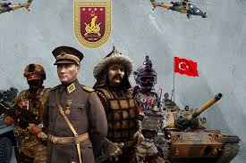
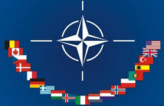

Türk Silahlı Kuvvetleri (TSK),yurt dışından gelecek tehdit ve tehlikelere karşı Türk vatanını savunmakla görevli askerî kuvvettir. Görevi caydırıcılık sağlayacak şekilde askerî gücün muhafazasını ve güçlendirilmesini sağlamak, Türkiye Büyük Millet Meclisi kararıyla yurt dışında verilen görevleri yapmak ve uluslararası barışın sağlanmasına yardımcı olmaktır.Türk Silahlı Kuvvetlerinin başkomutanlığı Türkiye Büyük Millet Meclisinin manevi varlığından ayrılamaz ve cumhurbaşkanı tarafından temsil olunur. Genelkurmay başkanı, savaşta başkomutanlık görevini Cumhurbaşkanlığı namına yerine getirir.Türk Kara Kuvvetleri, Türk Deniz Kuvvetleri ve Türk Hava Kuvvetlerinden oluşmaktadır.2025 yılı itibarıyla sayı bakımından dünyanın 9,NATO'nun ise en güçlü 4.ordusudur.


Türk Silahlı Kuvvetleri’ne son hâlini Mareşal Mustafa Kemal Atatürk vermiştir.Osmanlı İmparatorluğu'nun Birinci Dünya Savaşı'nda yenilmesi sonrası İtilaf Devletleri Türk ordularını dağıtmış, Anadolu'yu işgale başlamıştır. Bu durum karşısında Türk milleti, Kuvâ-yi Milliye adı altında düzensiz biçimde ve bölgesel bazda işgale direnmeye başlamıştır. 9. Ordu Müfettişi olarak Samsun'a çıkan Mustafa Kemal Paşa, Türk Kurtuluş Savaşını başlatmış ve öncelikli olarak düzensiz Kuvâ-yi Milliye birliklerini düzenli ordu çatısı altında birleştirmeye çalışmıştır. Modern Türk ordusunun temelleri de bu zamanlarda atılmış, Kuvâ-yi Milliye birliklerinin başlarına subaylar geçirilmiş ve TBMM Orduları adı altında düzenli bir ordu formuna sokulmuştur. Düzenli hale getirilen Türk ordusunun ilk kazandığı muharebe, Garp Cephesi Kumandanı Miralay İsmet (İnönü) Bey kumandanlığında icra edilen I. İnönü Muharebesi'dir.[21] Cumhuriyet'in ilanından sonra da yine Mustafa Kemal Atatürk tarafından Türk Silahlı Kuvvetlerinin modernizasyon süreci büyük bir hızla devam ettirilmiştir.
Modern Türk ordusu daha sonra 1950 yılında Kore Savaşı'na Şimal Yıldızı adı verilen bir tugayla katılmıştır. Tugay; Busan, Suvan, Kumhwa, Elco bölgelerinde gerçekleşen savaşlarda boy göstermiştir. Kunu-ri Muharebesi sırasında gerçekleştirilen direniş ile birlikte 8. Amerikan ordusunun tümüyle Çin ordusu tarafından yok edilmesini engellemiştir. 1960'lı yıllarda Kıbrıs'ta Türklere karşı saldırılar başlayınca Kıbrıs'a operasyon için hazırlıklara başlamış ve 1974'te Kıbrıs Barış Harekâtı'nı gerçekleştirmiştir.Kuzey Kıbrıs Türk Cumhuriyeti'nin kuruluşunda önemli rol oynamıştır.
1980'li yıllarda PKK'nın kurulmasıyla birlikte Türkiye sınırları içinde PKK ile mücadeleye başlamıştır. 1990'lı yıllarda mücadeleyi Kuzey Irak'a taşımış ve Kuzey Irak'ta Çelik Harekâtı, Çekiç Harekâtı gibi sınır ötesi operasyonlar gerçekleştirmiştir. 1995 yılında Yunanistan ile yaşanan Kardak Krizi'nde kayalıklara çıkan Türk komandoları adaya Türk bayrağı dikmiştir, bu durum Yunanistan genelkurmay başkanını istifa ettirmiştir. 1998 yılında PKK'nın kurucusu Abdullah Öcalan'ın Suriye'de bulunması sebebiyle Suriye'yle ilişkiler gerilmiş, Türk ordusu bu gelişmelerin üstüne Suriye sınırına yığınak yapmıştır. Baskılar sonucu Adana Mutabakatı imzalanmış ve Türk ordusunun baskısı sonucu Abdullah Öcalan Suriye'den sınır dışı edilmiştir.
2008 yılında Kuzey Irak'a PKK ile mücadele amacıyla Güneş Harekâtı'nı gerçekleştirmiştir. İlerleyen yıllarda PKK'nın Türkiye doğusuna yaptığı yığınakları ortadan kaldırabilmek amacıyla Hendek operasyonlarını yapmıştır. Hendek operasyonlarının ardından Suriye İç Savaşı'na müdahalede bulunmuş Fırat Kalkanı Harekâtı ile Halep'in kuzeyinde bulunan IŞİD varlığını bitirmiş, YPG'nin Menbic ile Afrin kantonunu birleştirmesini engellemiştir. 2017 yılında İdlib'e girip gözlem noktaları oluşturmaya başlamıştır. 2018 yılında Afrin'e operasyon gerçekleştirip YPG'yi Afrin'den atmıştır. Afrin'de YPG'ye operasyon gerçekleştirdiği tarihlerde Kararlılık Harekâtı'nı başlatmış Kuzey Irak'a yeni bir askerî operasyonda bulunmuştur. Kararlılık Harekâtı Pençe Operasyonları ile genişletilmiştir ve Türk ordusu Kuzey Irak'ta belirli bölgeleri kontrol etmeye başlamıştır. Pençe Operasyonları sürerken Fırat'ın doğusunda bulunan YPG'ye Barış Pınarı Harekâtı ile müdahalede bulunmuş, 8 gün sürdürülen harekâtta 4820 kilometrekare alanı kontrol etmiştir. İdlib'de Türk birliklerine Rus ordusunun ve Suriye ordusunun saldırıları sonrası Türk Silahlı Kuvvetleri Bahar Kalkanı Harekâtı'nı da icra etmiştir.
Türk ordusu günümüzde Türkiye Cumhuriyeti tarafından terör örgütü olarak tanınan PKK'ya karşı Irak'ın kuzeyinde Pençe Operasyonları'nı sürdürmektedir diğer yandan İkinci Libya İç Savaşı'na direkt olarak dahil olmuştur ve taraflardan birisi olan Ulusal Mutabakat Hükûmeti'ne danışmanlık yardımında bulunmaktadır. Türk Silahlı Kuvvetleri, 2021'de tahmini 895.000 askerî ve paramiliter personeliyle ABD Silahlı Kuvvetleri'nden sonra NATO'daki en büyük ikinci askerî güçtür.
I. Dünya Savaşı'nda Osmanlı İmparatorluğu 7 cephede savaşa 2.850.000 kişiyi silah altına alarak girdi. Bu ordu 70 piyade, 2 süvari tümeninden oluşan 24 kolordulu 9 ordu birliğiydi. Mondros Mütarekesi'nden sonra zorunlu terhislerle 50.000 kişiye inmişti. Ancak Osmanlı ordusunun kalan iki kolordusundan biri Suriye cephesinden Ankara'ya konuşlanan Ali Fuat Paşa komutasındaki 20. Kolordu, diğeri ise Kafkas Cephesinde Erzurum'da konuşlandırılmış Kâzım Karabekir komutasındaki 15. Kolordu'ydu.[22]Türk Kurtuluş Savaşı sırasında ve sonrasında bu kolordular ve Kuvâ-yi Milliye birlikleri TBMM tarafından düzenli hale getirilerek modern Türk ordusunun temelleri atılmıştır. Kurtuluş Savaşı modern Türk ordusunun katıldığı ve kazandığı ilk savaş kabul edilebilir. Türkiye Cumhuriyeti kurulduğunda bu ordular yeni bir yapılandırmayla Türk Silahlı Kuvvetleri adını almıştır. Türk ordusu Cumhuriyet tarihi boyunca birçok isyan bastırmış, Kore Savaşı ve Kıbrıs Harekâtı'nda savaşmış, PKK'ya karşı operasyonlar yapmıştır. Ayrıca Afganistan, Kosova, Lübnan, Somali gibi birçok ülkeye uluslararası askerî kuvvetlere destek amaçlı asker göndermiştir.
I. Dünya Savaşı'ndan yenik çıkan Osmanlı İmparatorluğu'nun İtilaf Devletleri'nce işgali sonucunda Mîsâk-ı Millî sınırları içinde ülke bütünlüğünü korumak için girişilen çok cepheli siyasi ve askerî mücadele. 1919-1922 yılları arasında gerçekleşmiş ve 11 Ekim 1922'de imzalanan Mudanya Mütarekesi ile fiilen, 24 Temmuz 1923'te imzalanan Lozan Antlaşması ile resmen sona ermiştir ve Mîsâk-ı Millî hedeflerine büyük ölçüde ulaşılmıştır. Ağustos 1922'de Türk kuvvetleri 207.941 kişiydi.[25] Batı, Doğu, Güney cephelerinde savaştı. Çatışmalar Batı cephesinde I. İnönü Muharebesi ve II. İnönü Muharebesi, Kütahya-Eskişehir Muharebeleri, Sakarya Meydan Muharebesi, Büyük Taarruz, Başkomutanlık Meydan Muharebesi'dir.
Türkiye Cumhuriyeti, 1950 yılında başlayan Kore Savaşı'na fiilen katılmış ve 1950'den 1953'e kadar tugay büyüklüğünde bir kuvvetle Kuzey Kore'ye karşı savaşmıştır. Sovyet baskısına karşı müttefikler arayan ve bu sebeple NATO'ya girmek isteyen Türkiye, bu isteklerini daha kolay elde etmek ve Amerika'ya yakınlaşmak amacıyla Kore Savaşı'na bir tugay yollamıştır.
20 Temmuz 1974'te Başbakan Bülent Ecevit’in emriyle Türk Silahlı Kuvvetlerinin Kıbrıs'ta başlattığı askerî harekat iki aşamalı olarak gerçekleştirilmiş, birinci aşamasında Kıbrıs'ın adasına havadan paraşütlü askerlerin uçaklarla indirilmiş ve denizden Türk Deniz Kuvvetleri'ne ait savaş gemileriyle Türk askeri karaya çıkarılmıştır. Birinci harekat sonunda ateşkes ilan edilmiş ve Cenevre'de barış görüşmeleri başlamıştır ancak barışın sağlanamayacağı kesinleşince ikinci ve son harekât Bülent Ecevit’in "Ayşe Tatile Çıksın" parolasıyla 13 Ağustos'ta Türk birlikleri tarafından başlatıldı. Türk birlikleri 14 Ağustos'ta Lefkoşa'ya, 15 Ağustos'ta Lefke ve Mağusa'ya girdi. Harekât neticesinde bir taraftan Mağusa'ya diğer taraftan Lefke'ye varılarak Türk tarafının sınırları çizildi. Harekatın sonucunda Rum birlikleri mağlup edilmiş ve Kıbrıs'ın kuzeyinde Kuzey Kıbrıs Türk Cumhuriyeti kurulmuştur.
Türk Silahlı Kuvvetleri, PKK ile 1980'li yıllardan beri mücadele etmektedir. Millî Savunma Bakanlığı verilerine göre 1984-2009 arasında 5821 TSK askeri, 775 emniyet görevlisi, 1350 köy korucusu, 4.828 sivil çatışma ve saldırılarda hayatını kaybetmiş, bununla birlikte yaklaşık 28.000 PKK militanı öldürülmüştür.[29] Bu mücadele çerçevesinde PKK'nın iki numaralı adamı Şemdin Sakık 14 Nisan 1998'de, elebaşı Abdullah Öcalan ise 15 Şubat 1999'da yakalanmışlardır. Türkiye, Abdullah Öcalan’ın 15 Şubat’ta yakalandığını, 16 Şubat 1999’da Başbakan Bülent Ecevit’in yaptığı, “Abdullah Öcalan Türkiye’dedir” açıklamasıyla öğrendi.[30] Yargılama süreçlerini takiben vatana ihanet suçundan müebbet hapis cezası ile cezalandırılarak cezaevine konulmuşlardır. Yine Türk Silahlı Kuvvetleri 1991 yılından beri Kuzey Irak'taki PKK kamplarına yönelik Süpürge, Kazıma, Atmaca, Çelik, Tokat, Çekiç, Şafak ve Güneş kod adlı sınır ötesi harekâtlar düzenlemiştir.
Türk bandıralı bir geminin Kardak Kayalıkları'nda karaya oturması sonucu Türk ve Yunan kurtarma ekipleri arasında anlaşmazlık çıkınca patlayan krizdir ve iki ülkeyi savaşın eşiğine getirmiştir. Türk Sualtı Taarruz komandoları, Kardak kayalıklarının etrafını saran Yunanistan Donanmasını aldatarak Kayalıklara çıkarma yapmıştır. Olayı 4 saat sonra ABD'den öğrenen Yunanistan Genelkurmay Başkanının istifası ile sonuçlanmıştır. Gerginliği NATO ve ABD araya girerek önlemiştir.
1990'lı yıllarda PKK lideri Abdullah Öcalan'ın Suriye içinde serbestçe dolaşması ve PKK'nın kamplarının burada bulunması Türkiye ile Suriye'yi karşı karşıya getirdi. Türk Ordusu Suriye sınırına doğru kaydırıldı. Çeşitli askerî ve siyasi baskılara dayanamayan Suriye bu tutumundan vazgeçerek Öcalan'ı sınır dışı etmiştir.[kaynak belirtilmeli] Türkiye-Suriye ilişkileri on yıllar sonra 22 Haziran 2012 tarihinde Hatay sınırında eğitim uçuşunu icra etmekte olan TSK'ye ait F-4 Phantom tipi eğitim uçağı Suriye Silahlı Kuvvetleri tarafından düşürülmesi ile tekrar krize girmiş, Suriye uçak düşürdükten sonra uçağın Türkiye'ye ait olduğu anladıklarını iddia etmiş, olay sonrası dönemin Türkiye Başbakanı Recep Tayyip Erdoğan "TSK'nin angajman kurallarının değiştiğini" açıklamıştır. Bu kararda devam eden Suriye İç Savaşında Türkiye'nin Suriye muhalefetinin yanında olması ve bu yüzden ilişkilerin gerilmesi de etkili olmuştur. Uçağın parçalarının ve pilotların naaşlarının bulunmasından sonra 6. Kolordu'ya bağlı birlikler ve 4 Tank Taburu sınıra doğru kaydırılmış, sınır hattına uçaksavarlar ve Gaziantep Havalimanı'na askerî statü verilerek Füze rampaları yerleştirilmiştir.Akçakale Olayı olarak bilinen, 3 Ekim 2012'de Suriye'den ateşlenen bir top mermisi Türkiye'nin Şanlıurfa kentinin Akçakale ilçesine düştü. Olayda beş sivil Türk vatandaşı hayatını kaybetti. Türk Silahlı Kuvvetleri "yeni angajman kuralları çerçevesinde" anında karşılık vermiş ve Suriye'den atılan top mermisinin ateşlendiği askerî birlik 9 adet top atışıyla etkisiz hale getirilmiştir. Daha sonra Türkiye Büyük Millet Meclisinden Suriye için tezkere kararı çıktı. Türk Silahlı Kuvvetleri Suriye sınırına hava savunmada kullanılan silahların ağırlıkta olduğu askerî yığınak yaptı. Suriye Devleti olayın ardından hayatını kaybeden siviller için taziye dileklerini sunarak özür diledi.16 Eylül 2013'te Suriye'ye ait Mil Mi-17 helikopter sınır ihlali yaptığı için Malatya'dan havalanan 2 Türk jeti tarafından füzeyle vuruldu.[31][32] Bir yıl sonra 23 Mart 2014'te Hatay sınırında, sınır ihlali yapan 2 adet MİG-23 Suriye savaş uçakları, izlemeye alındı Suriye hava sahasında kuzeye doğru uçuşu Türk sınırına on deniz mili mesafeden itibaren Türk hava sahasına yaklaştığına ilişkin dört kez ikaz edildi fakat ikinci uçak uyarıyı dikkate almayarak Türk hava sahasına girerek yaklaşık bir kilometre kadar hava sahasını ihlal etti, daha sonra batıya doğru yönelerek 1,5 kilometre kadar Türk hava sahasında uçmaya devam etti. Bu esnada bölgede hava devriye görevinde havada hazır bulunan iki adet Türk F-16 uçağından birisi, angajman kuralları gereğince saat 13.14'te Suriye uçağına füze atmış ve isabet alan Suriye uçağı sınırın 1200 metre güneyinde ve Suriye topraklarında yer alan Kesep bölgesine düşürülmüştür.
24 Kasım 2015 tarihinde saat 09.20 civarında Hatay Yayladağı bölgesinde Türk Hava Sahasını ihlal eden Rusya Federasyonu'na ait SU-24 tipi savaş uçağı, Türk Silahlı Kuvvetleri (TSK) tarafından Türk hava sahasına girmeden önce beş dakika içerisinde 10 kez ikaz edilmesine rağmen Türk Hava Sahasını ihlal etti. Bunun üzerine, bölgede hava devriye görevinde bulunan TSK'ye ait iki F-16 uçağı, daha önce hükûmet tarafından ilan edilen angajman kuralları çerçevesinde, Rus savaş uçağını saat 09.24'te düşürdü.[35] Uçaktan atlayan pilotun Suriye Haber Ajansı (SANA) paraşütle atlayarak kurtulmayı başardığını yazdı.
24 Ağustos 2016'da TSK, Suriye içerisine ilk askeri harekatı olan Fırat Kalkanı Harekâtı'nı gerçekleştirdi. Bu harekatla Fırat nehrinin batısı ile Halep'in kuzeydoğusundaki IŞİD ve YPG varlıkları hedef alınmış, Cerablus ve El-Bab başta olmak üzere birçok kasaba ve kent ele geçirilmişti.
20 Ocak 2018'de Suriye'de yapılan ikinci askeri operasyon olan Zeytin Dalı Harekâtı başlamış ve bu harekat ile Afrin bölgesindeki YPG varlığına son verilmişti.
9 Ekim 2019'da Barış Pınarı Harekâtı ile Fırat'ın doğusundaki YPG hakimiyetindeki bölge hedef alınmış ve Tel Abyad ile Rasulayn arasındaki bölge YPG kontrolünden ele geçirilmişti.
27 Şubat 2020'de Rusya destekli Esad rejimi kuvvetlerinin Türk Askerlerine karşı yaptığı saldırılara cevap olarak başlatılan Bahar Kalkanı Harekâtı ile Esad rejimi ve müttefikleri hedef alınmış ve İdlib'e yönelik başlatılan Suriye taarruzu durdurulmuştu.
Türk Kara Kuvvetleri, Türk Silahlı Kuvvetlerinin en büyük kuvvetidir. Bünyesinde 4 Ordu, 14 Kolordu, 8 Mekanize Tümen, 11 Zırhlı Tugay, 23 Mekanize Piyade Tugayı, 15 Motorize Piyade Tugayı, 8 Komando Tugayı, 4 İnsani Yardım Tugayı, 5 Topçu Tugayı bulunur. Ayrıca Kıbrıs'ta Kıbrıs Türk Barış Kuvvetleri adı altında yaklaşık bir kolordu seviyesinde yaklaşık 60.000 Personel bulundurmaktadır. Anayasa ile tayin edilmiş olan Türkiye Cumhuriyeti'nin korunması ve kollanması ile ilgili kendisine verilen görevleri yerine getirir. Türk Kara Kuvvetindeki asker (er ve erbaş) sayısının 550.000 üstünde olduğu sanılmaktadır.
Türk Deniz Kuvvetleri, Türk Silahlı Kuvvetlerinin en büyük 2. kuvvetidir. Türkiye'yi denizden gelebilecek her türlü tehditlere karşı savunmak ve ülkenin denizle alakalı menfaatlerini korumak ve kollamakla görevli kuvvettir. Türk Deniz Kuvvetleri; 16 fırkateyn, 12 denizaltı, 9 korvet, 18 hücumbot, 11 mayın tarama gemisi, 16 devriye gemisi ve yardımcı gemiler ile Karadeniz, Ege ve Akdeniz'de aktif olarak faaliyette bulunmaktadır. 55.000 aktif çalışanı ile personel sayısı bakımında dünyanın 8. büyük deniz kuvvetidir.[37] Donanma Komutanlığı, Kuzey Deniz Saha Komutanlığı, Güney Deniz Saha Komutanlığı, Deniz Eğitim ve Öğretim Komutanlığı olmak üzere dört ana ast komutanlıktan oluşur.
Türk Deniz Kuvvetleri, Türk Silahlı Kuvvetlerinin en büyük 2. kuvvetidir. Türkiye'yi denizden gelebilecek her türlü tehditlere karşı savunmak ve ülkenin denizle alakalı menfaatlerini korumak ve kollamakla görevli kuvvettir. Türk Deniz Kuvvetleri; 16 fırkateyn, 12 denizaltı, 9 korvet, 18 hücumbot, 11 mayın tarama gemisi, 16 devriye gemisi ve yardımcı gemiler ile Karadeniz, Ege ve Akdeniz'de aktif olarak faaliyette bulunmaktadır. 55.000 aktif çalışanı ile personel sayısı bakımında dünyanın 8. büyük deniz kuvvetidir.[37] Donanma Komutanlığı, Kuzey Deniz Saha Komutanlığı, Güney Deniz Saha Komutanlığı, Deniz Eğitim ve Öğretim Komutanlığı olmak üzere dört ana ast komutanlıktan oluşur.